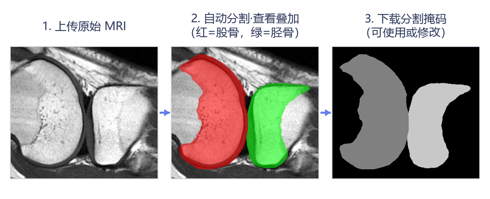

基于U-Net深度学习的膝关节MRI自动分割系统
膝影骺现系统用于膝关节MRI中股骨远端、胫骨近端骨骺区域的自动分割。上传T1或PD序列原始图像后，系统基于U-Net深度学习模型输出三类标签（0 背景、1 股骨、2 胫骨），并提供原图叠加预览与掩码文件下载（NIfTI/PNG）。推荐使用NIfTI格式（.nii/.nii.gz）。
📦 支持批量处理：单序列内可批量上传，单次最多处理 10 张图像，全部结果可打包为 ZIP 下载。
① 骨骺区域的意义：股骨远端、胫骨近端的骨骺（生长板）区域，是骨骼发育成熟评估的解剖依据——骨骺骨化、生长板由部分融合到完全闭合的过程，承载着与年龄相关的关键信息。② 分割掩码的用途：分割后的掩码可作为结构化标注用于模型训练、统计建模及教学演示，也可用于区域面积、骨骺宽度、形态与信号强度等定量分析。③ 自动分割将逐例人工勾画变为一键完成，让批量数据标注简单高效。
| 序列 | Dice | IoU | HD95 (mm) | ||||
|---|---|---|---|---|---|---|---|
| 股骨 | 胫骨 | 平均 | 股骨 | 胫骨 | 股骨 | 胫骨 | |
| T1 | 0.9519 | 0.9228 | 0.9373 | 0.9099 | 0.8622 | 4.3552 | 4.3082 |
| PD | 0.9195 | 0.8697 | 0.8946 | 0.8581 | 0.7792 | 11.7960 | 21.4895 |
Dice与IoU（交并比）取值0–1，越接近1表示分割结果与人工标注越一致；HD95（95%豪斯多夫距离，单位mm）衡量分割边界误差，数值越小越好。
上传原始影像后即可查看分割叠加效果，并下载分割掩码直接使用，或对不满意的掩码进行修改。

① 掩码叠加预览（红色=股骨，绿色=胫骨）；② 叠加图PNG；③ 分割掩码NIfTI（.nii，可在ITK-SNAP中打开核对、修改）；④ 批量结果可打包为ZIP下载。
上传T1或PD膝关节MRI，自动分割股骨与胫骨骨骺区域
T1或PD任一序列图像上传后即自动分割；如需双序列结果，请分别上传。每个序列下方都会显示掩码预览与下载按钮。